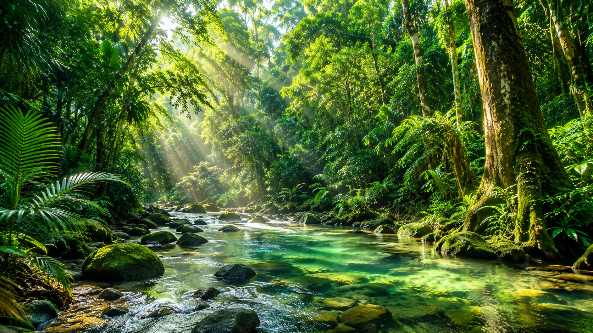
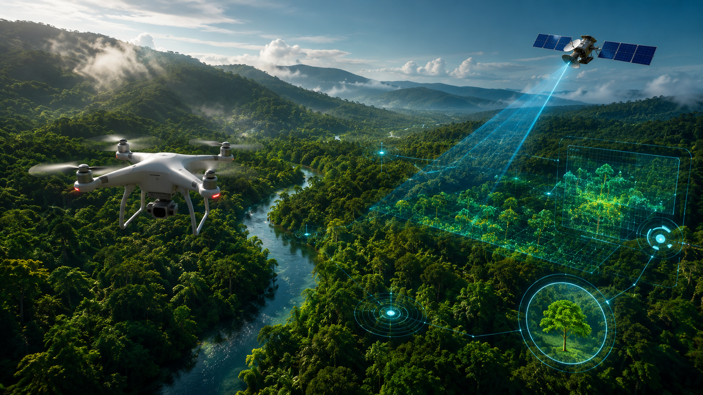

Conheça os impactos do desmatamento e descubra soluções para proteger o meio ambiente.
O desmatamento é um dos maiores problemas ambientais da atualidade. A retirada das florestas provoca impactos na biodiversidade, no clima, nos rios e na qualidade de vida das pessoas.
O desmatamento acontece quando áreas de vegetação natural são destruídas para atividades humanas, como agricultura, pecuária, mineração e expansão urbana.
A emissão de gases do efeito estufa aumenta significativamente.
Animais e plantas perdem seus habitats naturais.
As florestas ajudam a preservar rios e nascentes.

Drones, satélites e inteligência artificial ajudam no monitoramento das florestas e no combate ao desmatamento ilegal.